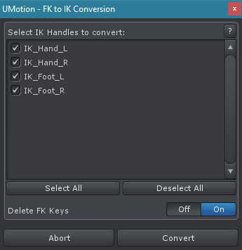

FK to IK Conversion Professional
This dialog allows to automatically create Inverse Kinematics keys that result in a similar animation as the respective Forward Kinematics keys. This is very useful for converting existing animations to IK. Animations that use IK instead of FK are usually easier to modify.
Please note that the FK to IK conversion can also be performed directly when importing animations (see Import).
The conversion works across every type of 3D model no matter if it's a human like character, a robot, a spider,... Before the conversion can take place, Inverse Kinematics needs to be setup
FK to IK Conversion Dialog
The dialog lists every IK handle that is setup in the animated GameObjects rig (see IK Setup Wizard). Select the IK handles that should be converted. The converter will automatically create keys for the IK handle to imitate the animation defined by the FK keys. Please note that the converted IK animation can slightly differ from the original FK animation.
Attention: If the current animation already has keys for the IK handles that should be converted, those keys will be automatically removed.
Delete FK Keys: When this option is enabled, the FK keys that have been converted to IK will be deleted. IK handles that use "FK Pose" as reference need their FK keys to function properly thus those FK keys will not be deleted.
Improving Conversion Accuracy
When using IK it is usually not possible to rotate single bones in the chain around their own axis (= twist/roll rotations). Meaning that it is possible to the whole IK chain around the pole axis (using either the pole rotation property or the pole handle) but it is not possible to rotate only a certain bone around its own axis. Thus, if the animation that is converted to IK contains such rotations for bones that are within the IK chain, this rotation usually won't make it into the resulting IK animation. This can lead to visible differences. There are 2 ways to compensate that:
- Setting the Reference of the IK constraint to FK Pose. That way, the "twist" rotations are taken over from the FK pose. The downside of this method is, that in order for this to work the FK keys can't be removed from the clip after conversion as they are still needed. Furthermore the tight coupling of the FK pose with the IK pose makes it harder to edit the animation.
- By default the Target Rotation of the IK constraint is set to FK Rig. Let's assume we have an arm controlled via IK and the hand is the IK target. Using this rotation mode will use the local rotation the hand has in the FK rig and copy it to the IK rig. Thus if the forearm has a slightly different rotation (because of the missing twist rotation) this will result in a different global rotation of the hand. For poses where it is necessary that the global target rotation stays exactly the same as in the original FK pose (e.g. when a hand is holding a gun) it is recommended to set the the Target Rotation of the IK constraint to IK Handle. This will ensure that the global rotation of the IK target (e.g. the hand) will be exactly the same as it was in the FK animation even though the rest of the IK chain has slightly different rotations.
More information: IK Constraint - Setup